Bilder
Spielerlegenden
Die Legenden des TSV Hessental – und wie das Vereinsleben damals aussah.
Damals
Vereinsleben
Das Vereinsleben stand ganz oben auf der Agenda. Klick auf ein Bild öffnet die Großansicht.

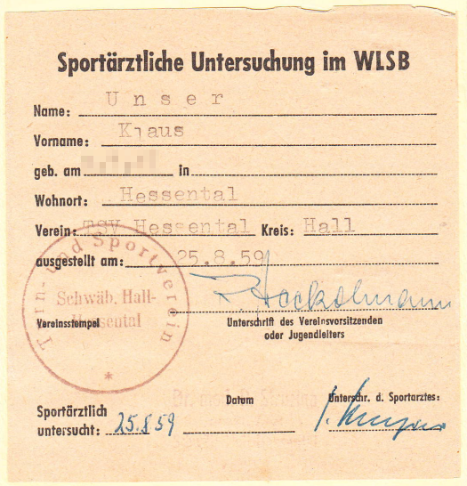

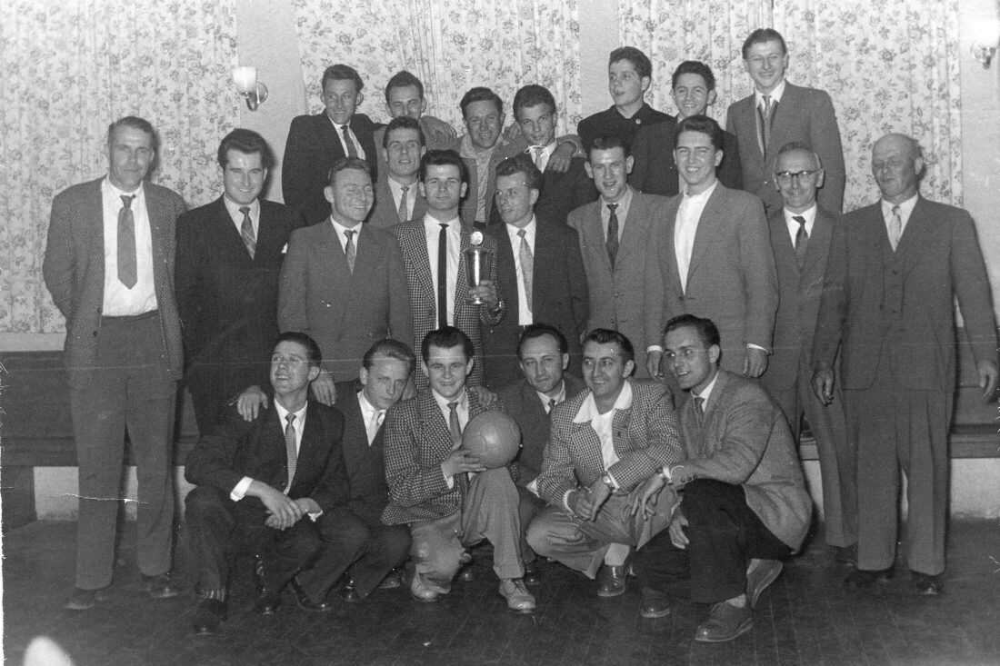

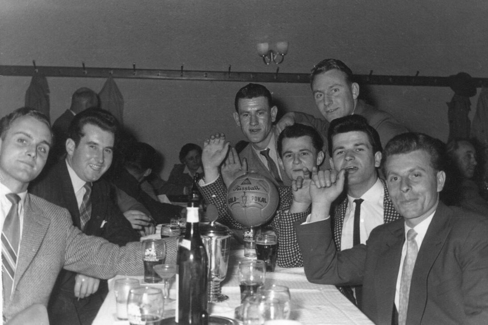
Spielerpässe
Spielerlegenden
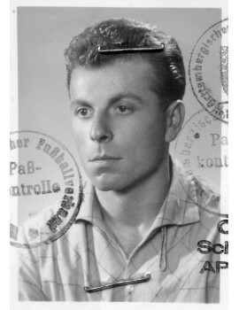
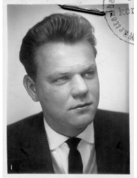
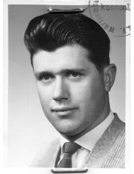
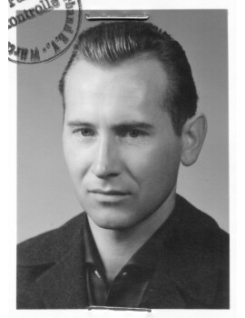
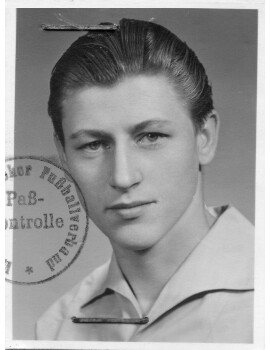
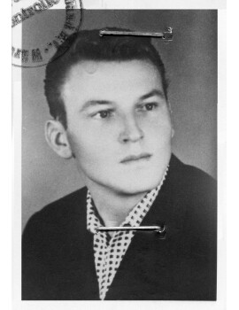
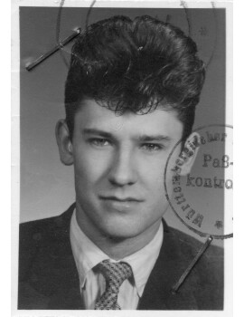
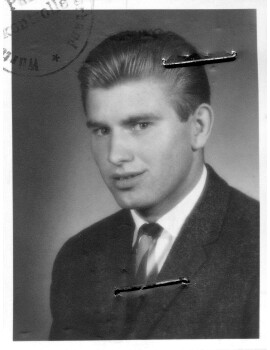
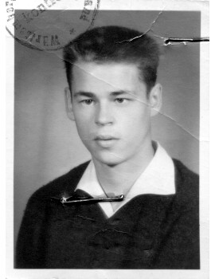
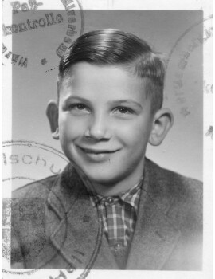
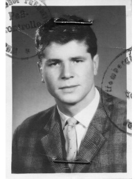
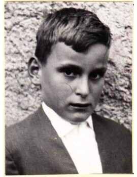
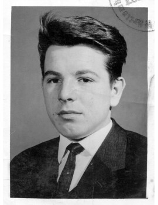
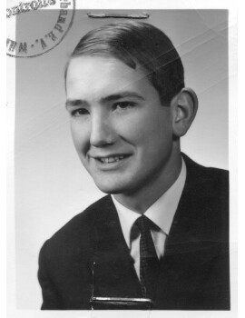
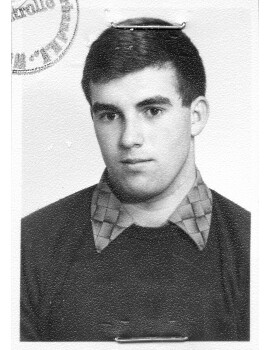
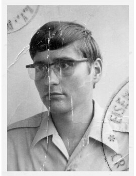
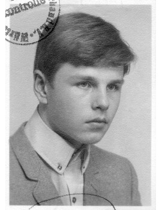
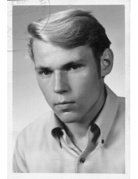
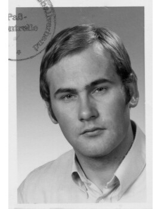
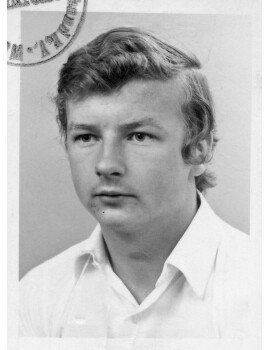
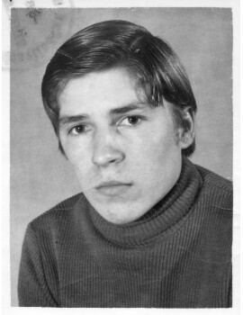